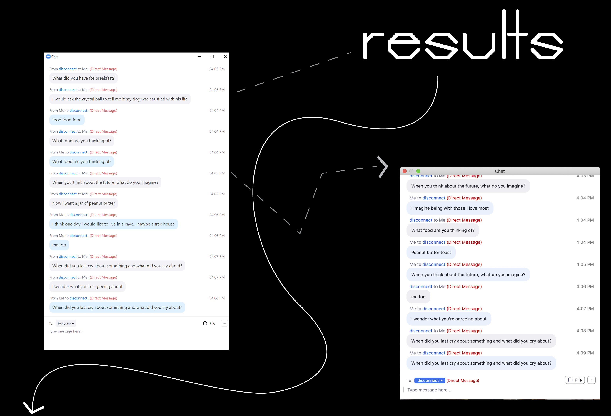

HOME
1. JOURNAL
2. MEME
3. GAMES
D
I
S
C
O
N
N
E
C
T
Instructions (ﾉ◕ヮ◕)ﾉ*:･ﾟ✧ 1. everyone will turn off their camera and microphone (optional) 2. everyone will change their name to: disconnect 3. the host will send out question to each players (provided below) 4. if you receive a question you can do one of the following: a. answer the question to the person who sent it to you b. send your answer to someone else (without the question) c. send that question to someone else 5. if you receive an answer you can do one of the following: a. respond to the answer you received to the person who sent it to you b. respond to the answer to someone else Questions for Host (☞ﾟヮﾟ)☞ ☜(ﾟヮﾟ☜) - What did you have for breakfast? - What do you day dream about? - What is your biggest fear? - Where do you see yourself in 10 years? - When was the last time your cried? - What is your soul food? - List 3 apps on your phone that you can't live without? - What do you hate about texting? - What is your favorite childhood toy? - If you can be an animal what would you be? - Whats your favorite childhood memory? - If you can have any super power what would it be? - What is your biggest fear? - When was the last time you sent a hand written letter? - What did you want to be when you were a child? - Whats your guilty pleasure movie? - Choose: a world without phones or a world without computers - What is your pet peeve? - Who are you the the closest to and why? - What is the most recent lie you have told? - What do you hate about zoom meetings? - Whats the last thing you do before going to bed? - Whats the first thing you do after waking up in the morning? - If you had the choice of having an argument through text message or a call, what would it be? - Whats your favorite emoji?

SEND ME YOUR RESULTS